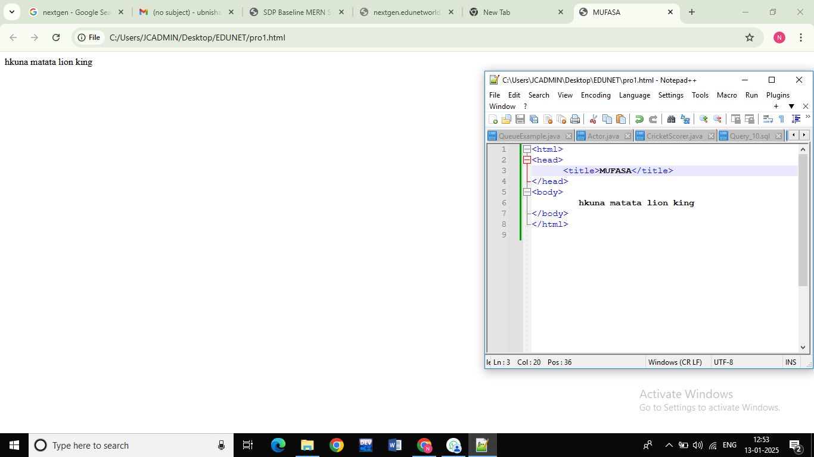

a2+b2+2ab=(a+b)2
h2so4
a2+b2=(a+b)2-2ab
a2-b2=(a+b)(a-b)
(a+b+c)2=a2+b2+c2+2ab+2bc+2ca
Step 2
Now,algeraic variales are assignned to each species (as stoichiometric
coefficients) in the unbalanced chemical equation,inn this example, the equation can e written as follows:
aC6H2O6+cCO2->cCO2+dH2O
